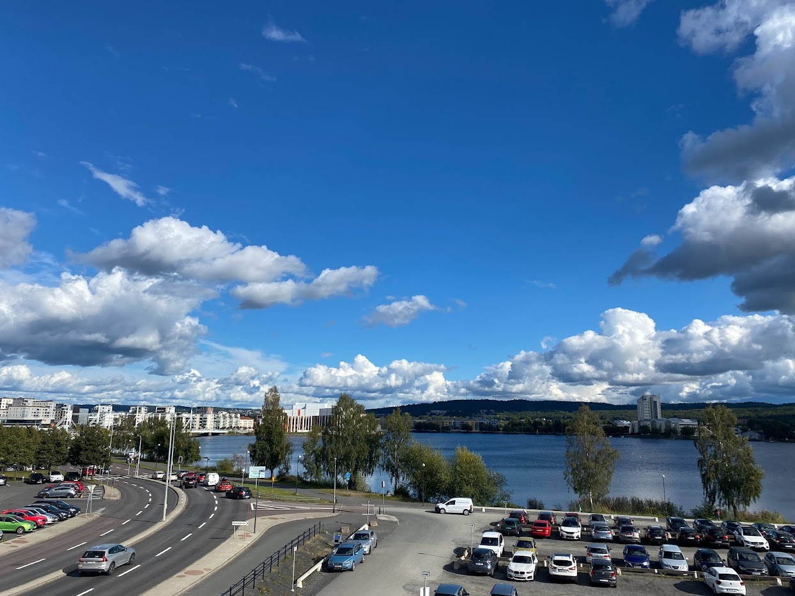
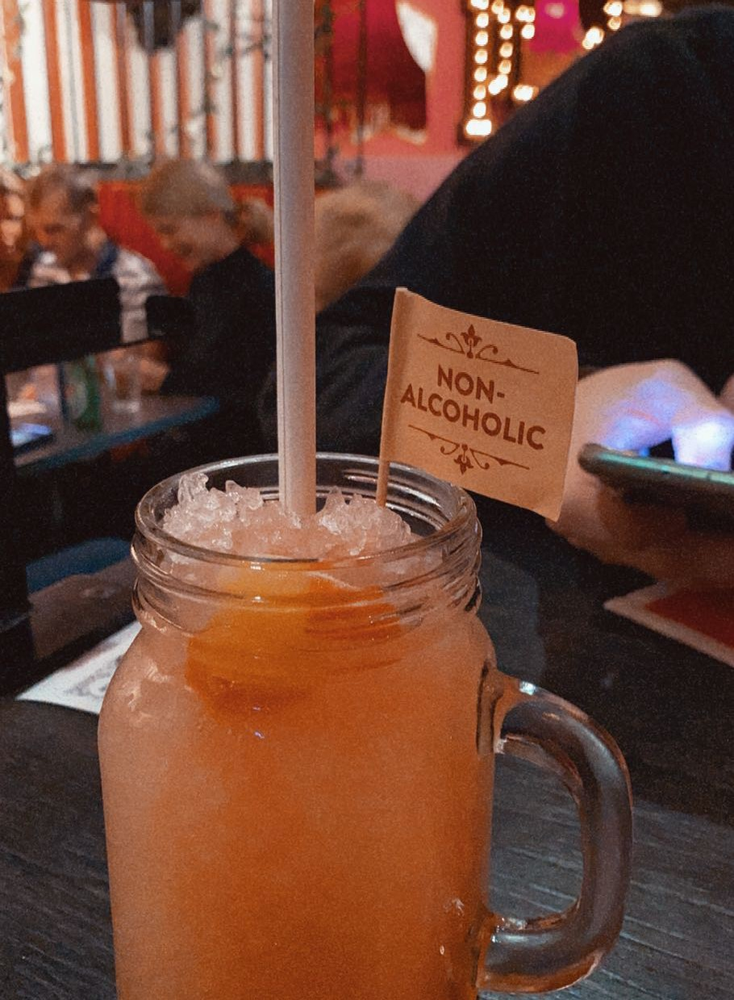

Basic Facts
Location: in the middle of Sweden
Population: 93.797 people in 2015
Province: Småland
The Landscape
Jönköping is surrounded by beautiful nature. There are three lakes that are part of Jönköping's infrastructure, Munksjön, Rocksjön and Vättern which is one of the biggest lakes in Sweden. The landscape in Småland is very similar to that in the south of Germany: mountainous, green, many trees and lakes. This allows the residents and tourists to enjoy the nature by going on hikes or bike tours. It is also very popular to take a walk around Munksjön or along the coast of Vättern.
Activities
There are many activities that you can experience in Jönköping. If you are a shopping queen, there is a long shopping
street where you can find many different stores or Asecs the big
shopping center which is right next to IKEA.
Of course you can also go bowling, for this you will find several locations distributed in the areas of Jönköping.
Other activities that are also
very popular is either minigolf or go to an escape room. Jönköping also has a very active
student life: going out to eat in the evening in various restaurants, or having a small drink in a bar or club.
Going out
Speaking from my own experience, I have been visiting various places already in Jönköping. As a student, Akademien is the one student club where you can party hard with your friends and make new friends each night out. Near Akademien you can find another club which is open for everybody if you want something different for once as well as different drinks as well as music that is played. As for restaurants, there are a lot of them stationed on the coast of Munksjön but they are quite expensive for a student budget. Recently, I visited the restaurant Pinchos. It has his own unique style of a circus. You can choose form a big menu of small portioned food which is very tasty and since they are only small portions of the food, it is very tempting to try something new. They have drinks of each category for every customer which have somethimes a funny thought behind them.
